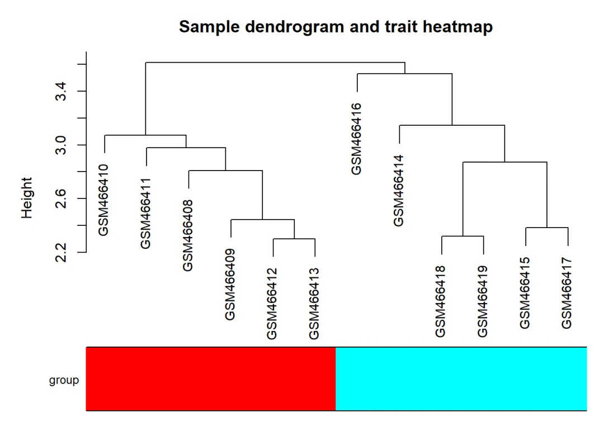
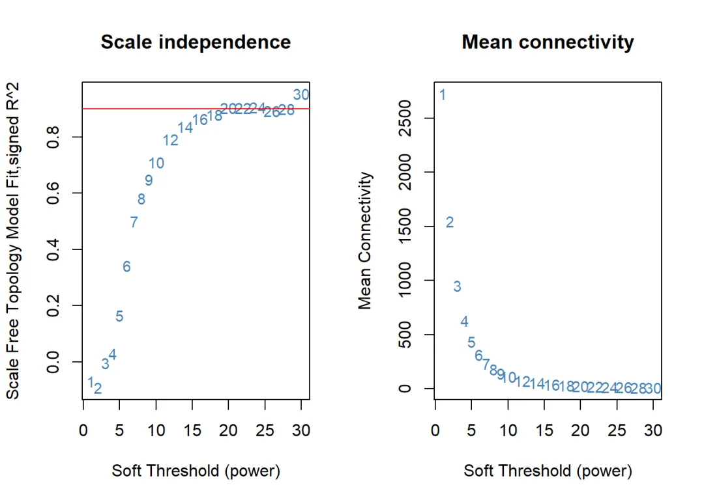
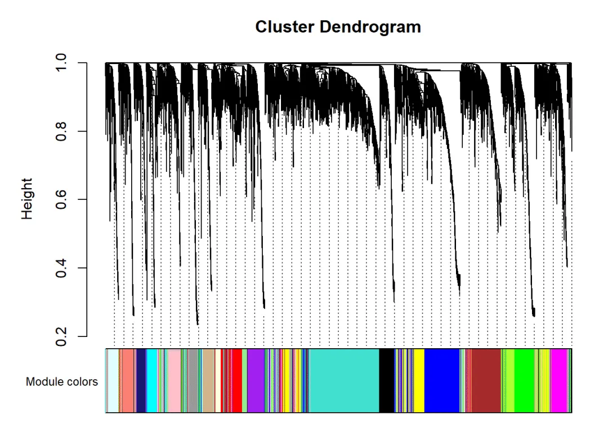
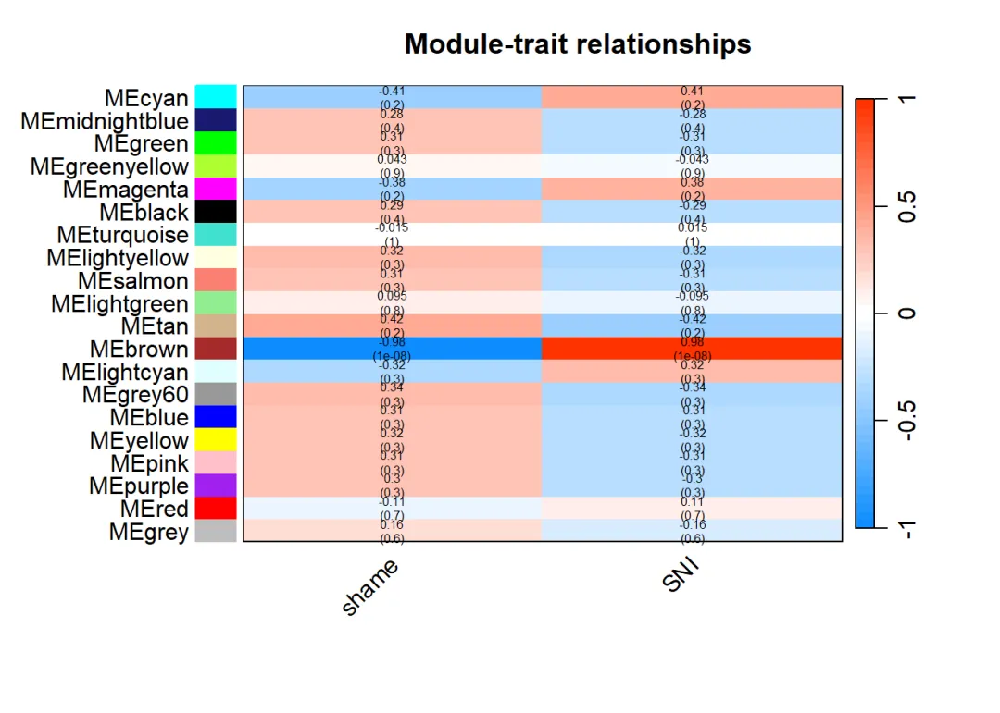
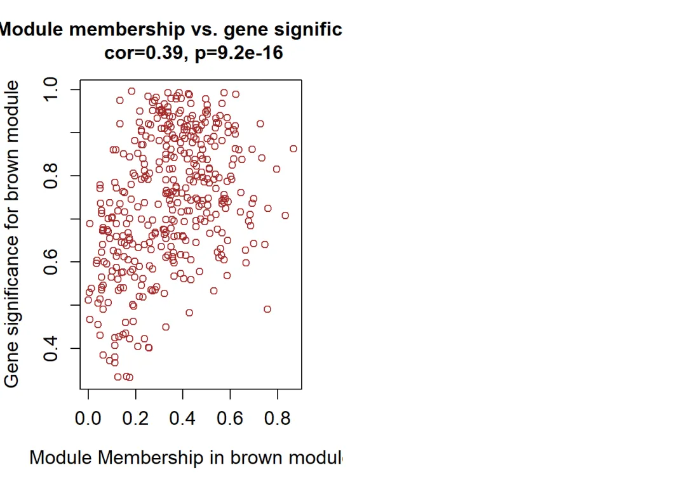
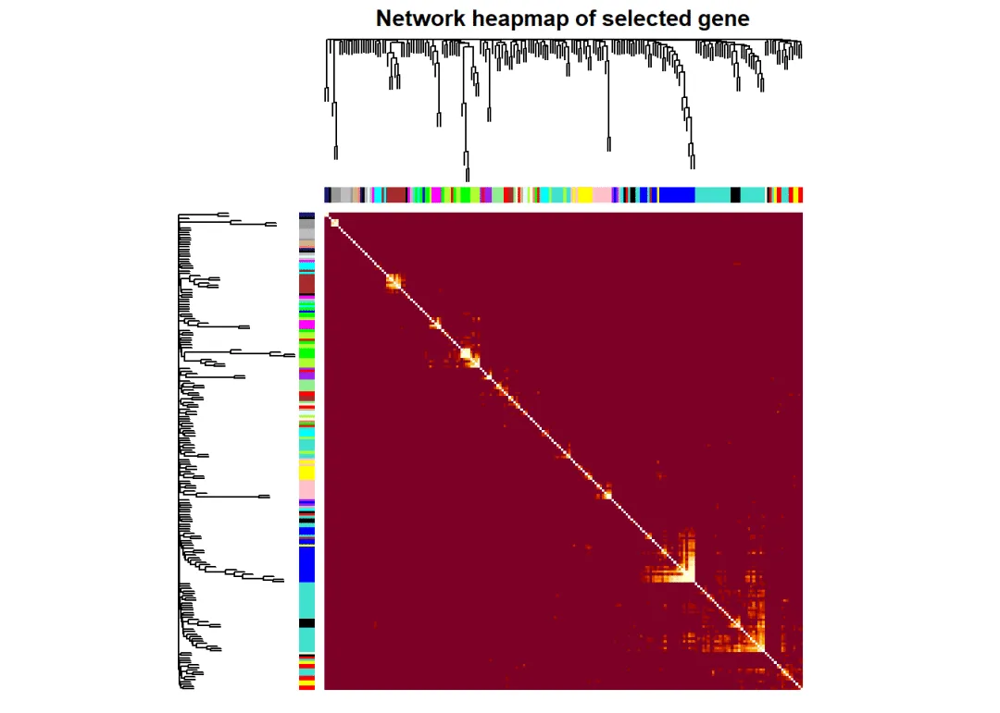
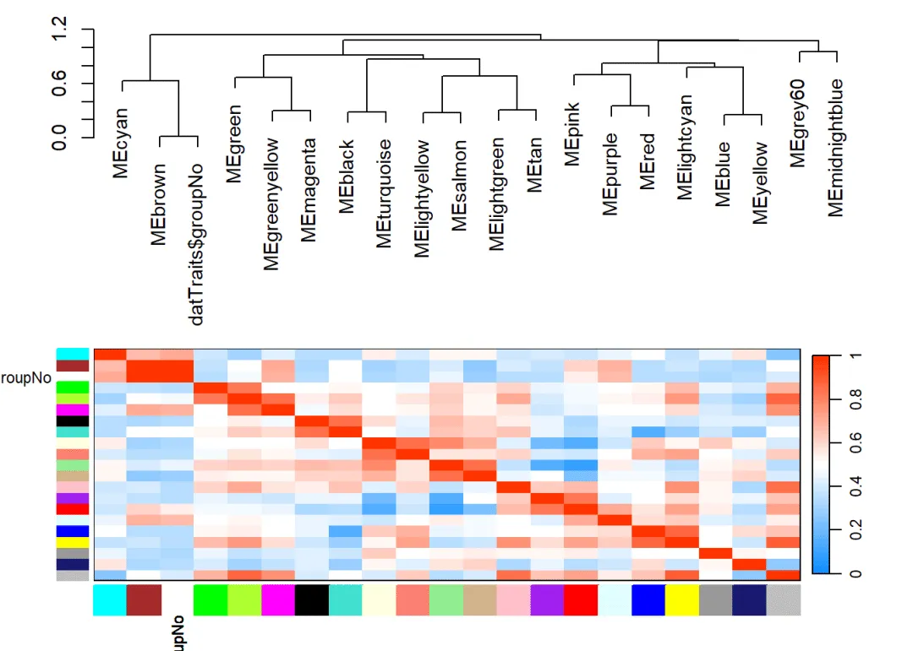
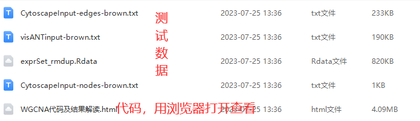

WGCNA代码及结果解读
原文：https://mp.weixin.qq.com/s?__biz=MzAwMzIzOTk5OQ==&mid=2247505146&idx=1&sn=c7a28170c40d3c58afb16ffd6441ae81&chksm=9b3cadaaac4b24bc0b762f9bfe704d8aba2bef74359abfb6d725b4b54491e037df7d9fbeb56e#rd 合集：粉丝来稿
WGCNA相关内容此前我们已经做过几次分享：一文学会WGCNA WGCNA+cytoscape构建基因表达模块网络图 一文搞定单细胞/空间转录组的WGCNA分析今天的内容来自粉丝的稿件:欢迎来稿

WGCNA(Weighted Gene Co-expression Network Analysis)即加权基因共表达网络分析，能帮助我们找到各方面相似的基因模块(module)，探索基因网络与关注表型之间的关系，寻找核心基因。适用于组别较多样本量大的数据，推荐5组(或者15个样品)以上的数据。比如：不同器官或组织类型发育调控、同一组织不同发育调控、非生物胁迫不同时间点应答、病原菌侵染后不同时间点应答。
简单来说WGCNA能帮我们找到和表型相关的一簇基因。通过后续的蛋白互作分析，从众多个基因中挑出我们最关注的基因，可以理解为降维过程。有关他的原理介绍很多文章都有介绍可以自行搜索。我们之前的教程也有对WGCNA的介绍结合起来一起理解让你更快上手WGCNA分析，往期回顾：
一文学会WGCNA
WGCNA+cytoscape构建基因表达模块网络图
本文目标为解决以下两个问题：
问题1：WGCNA图片产出
这个问题我们为大家准备了代码和详细的代码注释，可以帮我大家理解
问题2：WGCNA结果解读
生物信息学的学习分为两个阶段，第一阶段是代码运行不报错，第二阶段是能理解分析后的结果，用它来解释生物学问题。很多人拿到结果后不知道结果怎么解释，这篇推文将详细为大家介绍。
主要内容
WGCNA具体分析包含一下几个步骤
1、输入数据准备，样本筛选，该过程会产生聚类树图
2、计算软阈值为共表达网络建立基础该过程会产生Scale independence图和mean connectivity图
3、在上述基础上构建共表达网络，将基因划分到不同模块后，绘制基因聚类树 产生Cluster Dendrogram图
4、最重要一步绘制表型与基因相关性热图（WGCNA中最主要结果）产生Module-trait-relationships热图
5、探索感兴趣模块的基因与表型之间的相关性，输出图片为散点图
6、基因相关性热图
7、模块相关性热图
8、提取指定模块的基因做PPI网络分析
1、数据准备，样本聚类，检查样本
数据准备，准备好的数据进行样本聚类，聚类树查看，筛选查看是否存在异常样本
#对整合的表达量数据进行WGCNA分析
rm(list = ls())
library(WGCNA)
## Warning: 程辑包'WGCNA'是用R版本4.2.3 来建造的
## 载入需要的程辑包：dynamicTreeCut
## 载入需要的程辑包：fastcluster
##
## 载入程辑包：'fastcluster'
## The following object is masked from 'package:stats':
##
## hclust
##
##
## 载入程辑包：'WGCNA'
## The following object is masked from 'package:stats':
##
## cor
load(file = "exprSet_rmdup.Rdata")
WGCNA0 <- exprSet
#log2转换
WGCNA0 <- log2(WGCNA0+1)
#行列转置
WGCNA0 <- t(WGCNA0)
# 先对基因进行筛选，var计算每个基因方差，筛选基因变化较大的基因，此次选取前50%的基因
# 也可以不筛选基因全部基因去做
vars_res <- apply(WGCNA0, 2, var)
# 计算百分位数截止值
per_res <- quantile(vars_res, probs = seq(0, 1, 0.25)) # quantile生成分位数
per_res
## 0% 25% 50% 75% 100%
## 0.000000e+00 3.011791e-05 1.110721e-04 3.648772e-04 1.041685e-01
upperGene <- WGCNA0[, which(vars_res > per_res[3])] # 选取方差位于前50%的基因
dim(upperGene)
## [1] 12 5379
WGCNA1 <- data.matrix(upperGene)
nGenes <- ncol(WGCNA1)
nSamples <- nrow(WGCNA1)
head(WGCNA1[1:6,1:6])
## Mpz Pmp22 Hsp90ab1 Ctss Ifi27 Aqp4
## GSM466408 2.274303 2.269427 2.243142 2.218986 2.250876 2.231613
## GSM466409 2.295786 2.297237 2.243335 2.220513 2.244112 2.228219
## GSM466410 2.288138 2.283658 2.227718 2.210021 2.213204 2.243086
## GSM466411 2.254294 2.257156 2.265216 2.233592 2.230124 2.235004
## GSM466412 2.285357 2.283044 2.256306 2.225964 2.235184 2.223423
## GSM466413 2.273006 2.258740 2.259423 2.232405 2.225998 2.229874
datTraits <- group
library(stringr)
## Warning: 程辑包'stringr'是用R版本4.2.2 来建造的
datTraits=as.data.frame(datTraits)
rownames(datTraits) <- colnames(exprSet)
colnames(datTraits) <- c("group")
datTraits$sampleRep <- c(rep(1:6,2))
datTraits$groupNo <- c(rep(1,6),rep(2,6))
head(datTraits)
## group sampleRep groupNo
## GSM466408 shame 1 1
## GSM466409 shame 2 1
## GSM466410 shame 3 1
## GSM466411 shame 4 1
## GSM466412 shame 5 1
## GSM466413 shame 6 1
#先检查
gsg <- goodSamplesGenes(WGCNA1, verbose = 3);
## Flagging genes and samples with too many missing values...
## ..step 1
gsg[["allOK"]] # 全部合格
## [1] TRUE
# 如果是False则运行下面这部分
if (!gsg$allOK){
# Optionally, print the gene and sample names that were removed:
if (sum(!gsg$goodGenes)>0)
printFlush(paste("Removing genes:", paste(names(WGCNA1)[!gsg$goodGenes], collapse = ", ")));
if (sum(!gsg$goodSamples)>0)
printFlush(paste("Removing samples:", paste(rownames(WGCNA1)[!gsg$goodSamples], collapse = ", ")));
# Remove the offending genes and samples from the data:
WGCNA1 = WGCNA1[gsg$goodSamples, gsg$goodGenes]
}
# 使用hclust函数对样本进行层次聚类，dist函数计算基因表达数据间的距离
sampleTree <- hclust(dist(WGCNA1), method = "average")
# 为每个样本的表型信息赋予不同的颜色，并生成颜色向量
traitColors <- numbers2colors(as.numeric(factor(datTraits$group)),
colors = rainbow(length(table(datTraits$group))),
signed = FALSE)
# 绘制样本树状图和表型热图，groupLabels参数用于添加表型标签
plotDendroAndColors(sampleTree,
traitColors,
groupLabels = names(datTraits),
main = "Sample dendrogram and trait heatmap")

# 根据样本树状图的可视化结果，手动选择合适的cutHeight值，将样本划分为不同的组
# clust <- cutreeStatic(sampleTree, cutHeight = 120, minSize = 10)
# 根据cutreeStatic函数的结果，将不符合要求的组或样本剔除，只保留符合要求的样本数据
# keepSamples <- (clust == 1)
# WGCNA1 <- WGCNA1[keepSamples, ]
# 计算剩余样本数据中的基因共表达网络，并获取基因数和样本数
# nGenes <- ncol(WGCNA1)
# nSamples <- nrow(WGCNA1)
# dim(WGCNA1)
输出文件解读
样品和分组信息基本对应所以不需要设置cutHeight来进行样本剔除。这个图类似于PCA图查看样本聚类情况。
以上所有都是准备数据阶段出图1张或2张都是关于样本纳入筛选。
2、最优软阈值
数据准备样本聚类观测结束后，需要寻找最优软阈值（soft thresholding或power），使构建的网络符合无标度拓扑结构。构建共表达网络
# 定义1:30的power值，用于构建不同的基因共表达网络
powers <- c(c(1:10),
seq(from = 12,
to = 30,
by = 2))
# 使用pickSoftThreshold函数，计算每个power值对应的scale free topology模型拟合程度和平均连接度，
# 并返回最佳的power值
sft <- pickSoftThreshold(as.matrix(WGCNA1),
powerVector = powers,
networkType = "signed")
## Warning: executing %dopar% sequentially: no parallel backend registered
## Power SFT.R.sq slope truncated.R.sq mean.k. median.k. max.k.
## 1 1 0.06840 4.780 0.892 2720.00 2730.00 2980.0
## 2 2 0.09190 2.230 0.916 1550.00 1550.00 1820.0
## 3 3 0.00478 0.295 0.958 955.00 954.00 1240.0
## 4 4 0.02970 -0.567 0.969 628.00 622.00 930.0
## 5 5 0.16500 -1.130 0.968 434.00 425.00 732.0
## 6 6 0.34200 -1.430 0.977 312.00 301.00 598.0
## 7 7 0.50000 -1.650 0.978 233.00 220.00 501.0
## 8 8 0.58200 -1.680 0.973 178.00 165.00 429.0
## 9 9 0.64900 -1.720 0.980 139.00 126.00 372.0
## 10 10 0.71100 -1.760 0.982 111.00 98.70 328.0
## 11 12 0.79300 -1.830 0.985 74.80 62.70 261.0
## 12 14 0.83800 -1.840 0.985 53.00 41.90 213.0
## 13 16 0.86600 -1.830 0.983 39.10 29.50 178.0
## 14 18 0.88000 -1.830 0.978 29.90 21.40 151.0
## 15 20 0.90400 -1.780 0.986 23.40 15.70 130.0
## 16 22 0.90400 -1.780 0.974 18.80 11.90 114.0
## 17 24 0.90600 -1.750 0.957 15.40 9.17 101.0
## 18 26 0.89200 -1.750 0.931 12.80 7.18 90.7
## 19 28 0.90100 -1.700 0.928 10.90 5.67 81.7
## 20 30 0.95400 -1.580 0.959 9.31 4.59 74.0
# 根据sft对象中的结果，找到最佳的power值，并将其赋值给变量powerEstimate
powerEstimate = sft$powerEstimate
par(mfrow = c(1,2)) # 将绘图区域分为1行2列
cex1 = 0.9 # 定义文本大小
# 绘制scale independence随power变化的曲线
# 使用text函数添加标签，表示不同的power值
# 使用abline函数添加水平线，表示目标scale independence值（这里设置为0.9）
plot(sft$fitIndices[,1], # x轴为power值
-sign(sft$fitIndices[,3])*sft$fitIndices[,2], # y轴为scale independence指标
xlab = "Soft Threshold (power)", # x轴标签
ylab = "Scale Free Topology Model Fit,signed R^2", # y轴标签
type = "n", # 不绘制点和线
main = paste("Scale independence")) + # 图标题
text(sft$fitIndices[,1], # 在每个点上添加标签
-sign(sft$fitIndices[,3])*sft$fitIndices[,2],
labels = powers,
cex = cex1,
col = "steelblue") +
abline(h = 0.90, # 添加水平线
col = "red")
## integer(0)
# 绘制mean connectivity随power变化的曲线
# 使用text函数添加标签，表示不同的power值
plot(sft$fitIndices[,1], # x轴为power值
sft$fitIndices[,5], # y轴为mean connectivity指标
xlab = "Soft Threshold (power)", # x轴标签
ylab = "Mean Connectivity", # y轴标签
type="n", # 不绘制点和线
main = paste("Mean connectivity")) + # 图标题
text(sft$fitIndices[,1], # 在每个点上添加标签
sft$fitIndices[,5],
labels = powers,
cex = cex1,
col = "steelblue")

## integer(0)
输出文件解读
Scale independence图
绘制power值对应的散点图；结果显示从1开始整个变化趋势都还很明显，而某个值以后趋势已经不明显了；因此选取这数值作为最佳的power值。Power一般R方要高于0.8。如果调试后还不能满足可能是表达矩阵没有处理恰当，或者不满足分析条件比如样本里太少，基因数目过多等原因
mean connectivity图
该图为不同软阈值情况下的网络连通度，平均连接度和power取值间关系选取power，一般在平均连接度变化呈平稳处
3、构建共表达网络
基于最优软阈值构建共表达网络，将基因划分到不同模块后，可以绘制基因聚类树：
enableWGCNAThreads() # 启用WGCNA多线程加速
## Allowing parallel execution with up to 7 working processes.
if(T){ # 使用blockwiseModules函数，将基因共表达网络划分为不同的模块，
#并将结果存储在net对象中
net = blockwiseModules(
as.matrix(WGCNA1), # 基因表达矩阵
power = sft$powerEstimate, # power值
maxBlockSize = nGenes, # 最大块大小
TOMType = "unsigned", # TOM类型
minModuleSize = 30, # 最小模块大小
reassignThreshold = 0, # 重分配阈值
mergeCutHeight = 0.25, # 合并高度阈值
numericLabels = TRUE, # 数字标签
pamRespectsDendro = FALSE, # PAM是否考虑树状图结构
saveTOMs = F, # 是否保存TOM矩阵
verbose = 3 # 输出详细信息的级别
)
table(net$colors) # 显示不同模块的基因数目
}
## Calculating module eigengenes block-wise from all genes
## Flagging genes and samples with too many missing values...
## ..step 1
## ..Working on block 1 .
## TOM calculation: adjacency..
## ..will not use multithreading.
## Fraction of slow calculations: 0.000000
## ..connectivity..
## ..matrix multiplication (system BLAS)..
## ..normalization..
## ..done.
## ....clustering..
## ....detecting modules..
## ....calculating module eigengenes..
## ....checking kME in modules..
## ..removing 1 genes from module 1 because their KME is too low.
## ..removing 1 genes from module 3 because their KME is too low.
## ..removing 1 genes from module 9 because their KME is too low.
## ..removing 1 genes from module 15 because their KME is too low.
## ..removing 1 genes from module 17 because their KME is too low.
## ..merging modules that are too close..
## mergeCloseModules: Merging modules whose distance is less than 0.25
## Calculating new MEs...
##
## 0 1 2 3 4 5 6 7 8 9 10 11 12 13 14 15 16 17 18 19
## 216 988 571 394 388 306 288 236 236 235 233 214 162 158 153 149 142 137 92 81
##模块可视化,分类树与色块对应图
if(T){ # 判断条件为真
# 将模块标签转换为颜色，以便绘图
moduleColors=labels2colors(net$colors)
table(moduleColors) # 显示不同颜色的基因数目
# 绘制分类树和模块颜色对应图
plotDendroAndColors(net$dendrograms[[1]], moduleColors[net$blockGenes[[1]]],
"Module colors",
dendroLabels = FALSE, hang = 0.03,
addGuide = TRUE, guideHang = 0.05)
}

输出文件解读
Cluster Dendrogram
聚类树状图，这个图可以分为两部分看：上半部分是基因的层次聚类树状图，下半部分是基因模块，也就是网络模块。上下对应，可以看到距离较近的基因（聚类到同一条分支）被划分到了同一模块。每个颜色代表一个模块，灰色代表里面基因不属于任何模块。
4、表型与基因相关性热图
在以上结果基础上，绘制表型与基因相关性热图，这个图片也是WGCNA中最重要的结果
library(WGCNA) # 载入WGCNA包
library(forcats) # 载入forcats包
datTraits$group <- factor(datTraits$group) # 将datTraits$group转换为因子变量
levels(datTraits$group) # 显示因子变量的水平
## [1] "shame" "SNI"
if(T){
nGenes = ncol(WGCNA1) # 基因数目
nSamples = nrow(WGCNA1) # 样本数目
design <- model.matrix(~0+datTraits$group) # 构建模型矩阵
colnames(design)= levels(datTraits$group) # 修改列名，获取分组信息
MES0 <- moduleEigengenes(WGCNA1,moduleColors)$eigengenes # 计算模块特征向量
MEs = orderMEs(MES0) # 对模块特征向量排序
moduleTraitCor <- cor(MEs,design,use = "p") # 计算模块特征向量与表型的相关系数矩阵
moduleTraitPvalue <- corPvalueStudent(moduleTraitCor,nSamples) # 计算相关系数矩阵的p值
textMatrix = paste(signif(moduleTraitCor,2),"\n(",
signif(moduleTraitPvalue,1),")",sep = "") # 构建绘图时用的文本矩阵
dim(textMatrix)=dim(moduleTraitCor) # 修改文本矩阵的维度，与相关系数矩阵相同
par(mar=c(6, 8.5, 3, 3)) # 设置绘图边距
labeledHeatmap(Matrix = moduleTraitCor, # 绘制带标签的热图
xLabels = colnames(design), # x轴标签
yLabels = names(MEs), # y轴标签
ySymbols = names(MEs), # y轴符号
colorLabels = FALSE, # 不显示颜色标签
colors = blueWhiteRed(50), # 颜色范围
textMatrix = textMatrix, # 显示文本矩阵
setStdMargins = FALSE, # 不设置标准边距
cex.text = 0.5, # 文本大小
zlim = c(-1,1), # 颜色映射范围
main = paste("Module-trait relationships")) # 绘图标题
}

输出文件解读
Module-trait relationships
上图中，最左侧的颜色块代表模块，最右侧的颜色条代表相关性范围。中间部分的热图中，颜色越深相关性越高，红色表示正相关，蓝色表示负相关；每个单元格中的数字表示相关性和显著性。一般，我们会按相关性的绝对值筛选最相关模块，即负相关模块也应该考虑在内。grey模块中包含了所有未参与聚类的基因，因此是无效模块，不应用于后续分析。
5、感兴趣性状的模块相关性分析
感兴趣性状的模块与表型之间相关性分析，输出图片为散点图
if(T){
modNames = substring(names(MEs), 3) # 提取模块名称
geneModuleMembership = as.data.frame(cor(WGCNA1, MEs,
use = "p",method = "spearman")) #计算基因与模块的相关系数矩阵
MMPvalue = as.data.frame(corPvalueStudent(as.matrix(geneModuleMembership), nSamples)) # 计算相关系数矩阵的p值
names(geneModuleMembership) = paste("MM", modNames, sep="") # 修改列名
names(MMPvalue) = paste("p.MM", modNames, sep="") # 修改列名
geneTraitSignificance <- as.data.frame(cor(WGCNA1,datTraits$groupNo,use = "p")) # 计算基因与表型的相关系数矩阵
GSPvalue <- as.data.frame(corPvalueStudent(as.matrix(geneTraitSignificance),nSamples)) # 计算相关系数矩阵的p值
names(geneTraitSignificance)<- paste("GS.",names(datTraits$group),sep = "") # 修改列名
names(GSPvalue)<-paste("GS.",names(datTraits$group),sep = "") # 修改列名
selectModule<-c("brown") # 选择要绘制的模块（这里只选择了一个）
#selectModule <- modNames # 批量作图
par(mfrow=c(ceiling(length(selectModule)/2),2)) # 设置绘图区域，批量作图开始
for(module in selectModule){
column <- match(module,selectModule) # 找到当前模块在geneModuleMembership中的列号
print(module) # 输出当前处理的模块名称
moduleGenes <- moduleColors==module # 找到属于当前模块的基因
# 绘制散点图，横轴为基因在当前模块中的模块内连通性，纵轴为基因与表型的相关系数
verboseScatterplot(abs(geneModuleMembership[moduleGenes, column]),
abs(geneTraitSignificance[moduleGenes, 1]),
xlab = paste("Module Membership in", module, "module"),
ylab = paste("Gene significance for", module, "module"),
main = paste("Module membership vs. gene significance\n"),
cex.main = 1.2, cex.lab = 1.2, cex.axis = 1.2, col = module)
}
}
## [1] "brown"

输出文件解读 针对关键模块和感兴趣的性状进一步挖掘，看看基因与模块的相关性（Module Membership, MM） 和基因与性状的相关性（Gene Significance, GS）之间是否有某种关联。
6、基因相关性热图
探索所有基因或关注基因之间的相关性，用热图呈现，颜色越深，说明基因之间的相互作用越强。这个图片锦上添花吧，没有表型与基因相关性热图重要。
# 主要是可视化 TOM矩阵，WGCNA的标准配图
# 然后可视化不同 模块 的相关性 热图
# 不同模块的层次聚类图
# 还有模块诊断，主要是 intramodular connectivity
if(T){
# 提取 WGCNA1 数据的基因树
geneTree = net$dendrograms[[1]]
# 计算 TOM 相似度矩阵
TOM=TOMsimilarityFromExpr(WGCNA1,power=20)
# 将 TOM 相似度矩阵转换为距离矩阵
dissTOM=1-TOM
# 将距离矩阵取7次方，以突出较大的距离差异
#plotTOM = dissTOM^7
# 将对角线上的值设为 NA，以避免在可视化时影响效果
#diag(plotTOM)=NA
# 绘制 TOM 图
#pdf("6_allgene_Network-heatmap.pdf",width = 15,height = 15)
#TOMplot(plotTOM,geneTree,moduleColors,main="Network heapmap plot of all genes")
# 选取 nSelect 个基因进行可视化
nSelect =200
set.seed(10)
select=sample(nGenes,size = nSelect)
# 提取选定基因的 TOM 相似度矩阵
selectTOM = dissTOM[select,select]
# 对选定基因的 TOM 相似度矩阵进行聚类分析，生成基因树
selectTree = hclust(as.dist(selectTOM),method = "average")
# 提取选定基因的模块颜色信息
selectColors = moduleColors[select]
# 将选定基因的距离矩阵取7次方，以突出较大的距离差异
plotDiss=selectTOM^7
# 将对角线上的值设为 NA，以避免在可视化时影响效果
diag(plotDiss)=NA
# 绘制选定基因的 TOM 图
TOMplot(plotDiss,selectTree,selectColors,main="Network heapmap of selected gene")
}
## TOM calculation: adjacency..
## ..will not use multithreading.
## Fraction of slow calculations: 0.000000
## ..connectivity..
## ..matrix multiplication (system BLAS)..
## ..normalization..
## ..done.

输出文件解读 基因之间的相关性热图。其中颜色越深，说明基因之间的相互作用越强。由于对角线表示模块内部基因之间的相互作用，所以自然是对角线上的颜色最深。7、模块相关性热图
探索各个模块之间的相关性，这个图片也是锦上添花，没有表型与基因相关性热图重要。
if(T){
MEs=moduleEigengenes(WGCNA1,moduleColors)$eigengenes # 计算模块特征向量
MET = orderMEs(cbind(MEs,datTraits$groupNo)) # 对模块特征向量和表型变量进行排序
par(cex = 0.9) # 设置字体大小
#png("step6-Eigengene-dendrogram.png",width = 800,height = 600) # 打开png图像文件
plotEigengeneNetworks(MET, "", marDendro = c(0,4,1,2), marHeatmap = c(3,4,1,2), cex.lab = 0.8, xLabelsAngle
= 90,excludeGrey = FALSE) # 绘制模块特征向量的网络图
}

输出文件解读 模块之间的聚类树和相关性热图，探索模块之间的互作关系：
8、提取指定模块的基因做PPI网络分析
#######gene export for VisANT or cytoscape
if(T){ # 判断条件为真
module="brown" # 选择要导出的模块
probes = colnames(WGCNA1) # 获取基因名称
inModule = (moduleColors==module) # 找到属于当前模块的基因
modProbes=probes[inModule] # 提取属于当前模块的基因名称
head(modProbes) # 显示基因名称前几行
modTOM = TOM[inModule,inModule] # 提取属于当前模块的基因之间的TOM值
dimnames(modTOM)=list(modProbes,modProbes) # 修改维度名称
### 这里只选了top100的基因
nTop=100 # 设置要选择的基因数目
IMConn = softConnectivity(WGCNA1[,modProbes]) # 计算当前模块中基因之间的相似性
top=(rank(-IMConn)<=nTop) # 找到相似性排名前nTop的基因
filterTOM=modTOM[top,top] # 提取相似性排名前nTop的基因之间的TOM值
# for visANT
vis = exportNetworkToVisANT(filterTOM,file = paste("visANTinput-",module,".txt",sep = ""),
weighted = T,threshold = 0) # 导出VisANT可用的网络数据
# for cytoscape
cyt = exportNetworkToCytoscape(filterTOM,
edgeFile = paste("CytoscapeInput-edges-", paste(module, collapse="-"), ".txt", sep=""),
nodeFile = paste("CytoscapeInput-nodes-", paste(module, collapse="-"), ".txt", sep=""),
weighted = TRUE,
threshold = 0.02,
nodeNames = modProbes[top],
nodeAttr = moduleColors[inModule][top]) # 导出Cytoscape可用的网络数据
}
## softConnectivity: FYI: connecitivty of genes with less than 4 valid samples will be returned as NA.
## ..calculating connectivities..
导出文件后需要在cytoscape中进行操作寻找关键基因，具体可参考之前推文 WGCNA+cytoscape构建基因表达模块网络图
参考： https://github.com/cran/WGCNA

测试文件与可复制代码

 不要再说我的链接失效啦，我也不知道为啥腾讯和百度云不对付，微信页面或腾讯浏览器时常打不开百度云链接，链接最好在谷歌浏览器中打开或扫码打开 ，真的失效了再提醒客服更换链接哦。也不要说我的链接里没代码，html格式的文件大家用浏览器打开就可以看到整理好的笔记：
不要再说我的链接失效啦，我也不知道为啥腾讯和百度云不对付，微信页面或腾讯浏览器时常打不开百度云链接，链接最好在谷歌浏览器中打开或扫码打开 ，真的失效了再提醒客服更换链接哦。也不要说我的链接里没代码，html格式的文件大家用浏览器打开就可以看到整理好的笔记：

链接：
https://pan.baidu.com/s/1n36-b_us9FnvlVH2rQr4lA?pwd=hkob
若链接失效可以文末联系客服领取~
如何联系我们
公众号后台消息更新不及时，超过48h便不许回复读者消息，这里给大家留一下领取资料及免费服务器(有root权限的共享服务器)的微信号 ，方便各位随时交流、提建议（科研任务繁重，回复不及时请见谅）。此外呼声一直很高的交流群 也建好了，欢迎大家入群讨论：
大家可以阅读完这几篇之后添加给生信入门初学者的小贴士 如何搜索公众号过往发布内容

 您点的每个赞和在看，我都认真当成了喜欢
您点的每个赞和在看，我都认真当成了喜欢